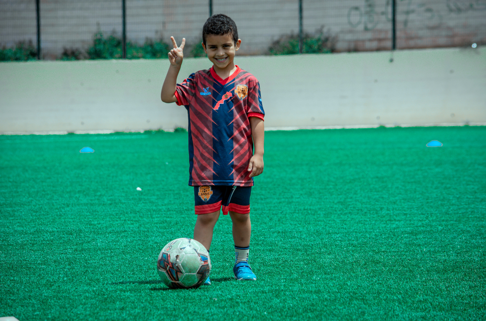
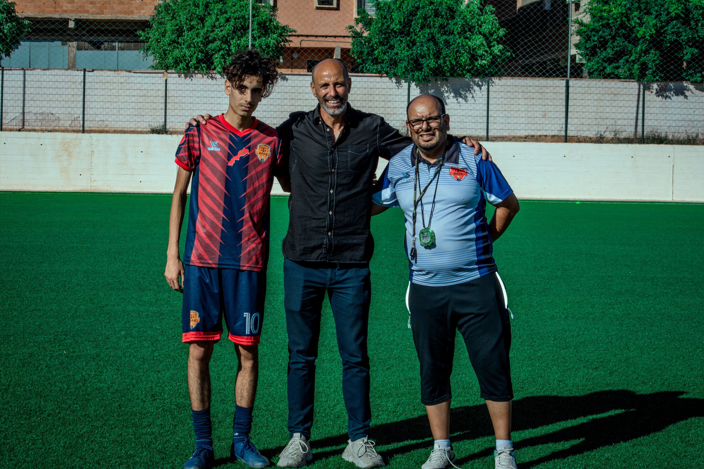
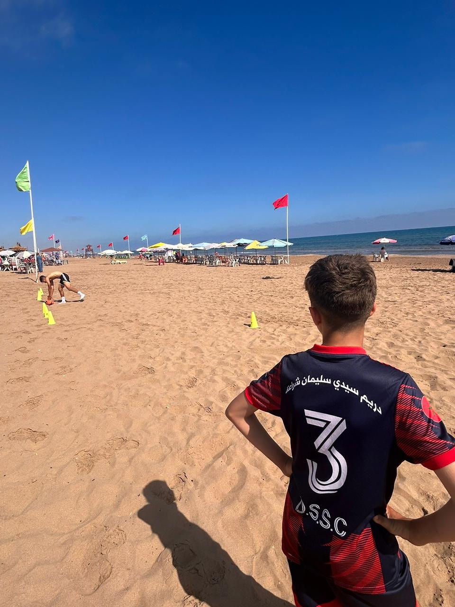

Quel est le role de notre Président ?
Notre association de football, Dream Sidi Slimane Cheraa Sportive, est dirigée par notre président, M. Bekkaoui El Bekkay. En tant que président de notre club de football, M. Bekkaoui El Bekkay joue un rôle crucial. Il est responsable de la gestion globale de l'association, supervisant les opérations quotidiennes et assurant la coordination entre les différents départements. Son leadership est essentiel pour le développement stratégique du club, la planification des événements, et la prise de décisions importantes concernant les équipes et les compétitions. M. Bekkaoui El Bekkay représente également l'association lors des réunions officielles et des rencontres avec d'autres clubs et organisations sportives.

Qui sont les membres de notre association ?
Dans notre association de football "Dream Sidi Slimane Cheraa", plusieurs membres jouent un rôle crucial dans son développement. Un exemple pertinent est celui de M. Mabrouk Abdelhak, notre Secrétaire Général, dont l'engagement et la gestion efficace sont essentiels pour le bon fonctionnement de l'association. De même, notre trésorier, M. El Majnioui Abdelkader, assure une gestion financière rigoureuse qui soutient nos activités et projets. Nos membres sont des piliers indispensables de notre structure, contribuant activement à la croissance et à la réussite de notre association.

Pourquoi Dream Sidi Slimane Cheraa ?
À Dream Sidi Slimane Cheraa, nous visons à développer de manière intensive les compétences footballistiques de chaque joueur, en les guidant vers l'excellence sur le terrain avec passion et détermination.

Quel est le rôle des staffs ?
Notre club de football va bien au-delà d'être simplement un lieu où l'on joue. C'est une véritable communauté où les joueurs sont façonnés par un staff passionné et dévoué. Imaginez un groupe de mentors, d'entraîneurs et de spécialistes qui aident non seulement à améliorer les compétences des joueurs, mais aussi à les guider dans leur développement personnel, avec une attention particulière et une grande expertise. Chaque membre de notre équipe apporte une contribution unique à notre succès. Les entraîneurs agissent comme des guides expérimentés sur le terrain, aidant nos jeunes talents à développer leurs compétences techniques tout en leur inculquant des valeurs comme le fair-play et la résilience. En dehors du terrain, notre équipe administrative gère les détails logistiques pour que tout se passe sans accroc, de l'inscription des joueurs à l'organisation des déplacements pour les tournois. Leur travail discret mais crucial permet à nos joueurs de se concentrer pleinement sur leur développement et leur jeu. Ensemble, ce staff remarquable crée un environnement dynamique et harmonieux où chaque joueur peut s'épanouir. Leur engagement constant pour s'améliorer et leur passion pour le football transforment notre club en un véritable centre de développement et de succès. Chaque victoire, chaque progrès personnel est le résultat de leur engagement indéfectible et de leur expertise collective, propulsant non seulement nos joueurs mais aussi notre club vers de nouveaux sommets de réussite et de reconnaissance.

Quelles sont Les Catégories capables d'en rejoindre ?
Notre club de football est comme un mélange de passion et de potentiel, commençant par les plus jeunes de U8 qui découvrent les joies simples de dribbler et de marquer des buts, jusqu'aux joueurs plus matures de U17 prêts à atteindre de nouveaux sommets dans le jeu.
Les U8, ces jeunes joueurs en herbe, courent joyeusement sur le terrain, captivés par la magie de toucher le ballon et de faire leurs premiers passes. Leurs visages illuminés par le sourire du plaisir d'apprendre, ils représentent l'avenir prometteur du club.
Les U10 et U12, en pleine découverte de leurs compétences, transforment le terrain en un spectacle de mouvement et de stratégie naissante. Chaque dribble, chaque interception est un pas de plus vers la maîtrise du jeu, captivant leurs familles et leurs supporters.
Les U14 et U16, dans l'ambiance compétitive, affinent leur technique et leur coordination, cherchant à dominer le terrain avec une détermination féroce. Leurs matchs sont des ballets d'agilité et de force, où chaque minute compte pour devenir des joueurs de caractère.
Enfin, les U17, presque prêts pour le monde adulte du football, portent sur leurs épaules les rêves de gloire et les ambitions professionnelles. Chaque coup de pied, chaque stratégie est une étape cruciale vers l'excellence, où la passion du jeu se mêle à l'ambition de devenir des champions.
Ensemble, ces différentes catégories créent une dynamique où chaque joueur, quel que soit son âge, trouve sa place dans l'évolution de notre club de football, qui façonne non seulement des athlètes compétents mais aussi des jeunes adultes imprégnés des valeurs d'équipe et d'esprit sportif.

Le Dimanche 09 Juin 2024 et à partir de midi, on a effectué une séance d'entrainements de nos différentes catégories.

📸 Photos en marge de la séance d'entraînement de ce vendredi 21 juin 2024 qui a vu la présence de l'ancien joueur international Mohamed Chaouch.
Le vendredi, notre association de football "Dream Sidi Slimane Charaâ" a accueilli avec grande joie et fierté l'ancien joueur de l'équipe nationale marocaine Mohamed Chaouch. Sa visite a été un soutien moral et une source de motivation pour tous les jeunes joueurs de notre école.
Mohamed Chaouch, connu pour ses compétences exceptionnelles et son esprit sportif exemplaire, a été une étoile montante de l'équipe nationale et un pilier du football marocain. Au cours de sa carrière professionnelle, il a contribué à de nombreuses réalisations du football national et a été un modèle à suivre pour chaque jeune joueur.
Nous souhaitons exprimer notre profonde gratitude à Monsieur Chaouch pour avoir consacré une partie de son temps à visiter notre école. Cette visite a été une occasion formidable pour nos enfants d'apprendre de ses expériences et de s'inspirer de ses succès. Nous sommes convaincus que ses conseils et ses orientations resteront gravés dans les esprits de tous, et seront un moteur puissant pour leur parcours sportif.
Merci, Mohamed Chaouch, pour cette visite exceptionnelle et pour votre grand soutien aux jeunes sportifs. Nous vous souhaitons une bonne santé et beaucoup de succès dans toutes vos futures entreprises.

L'association Dream Sidi Slimane Cheraa Sportive a organisé une sortie à Saïdia le 22 juin 2024. Nous avons passé une nuit sur place et profité d'une journée bien remplie. À notre arrivée, nous avons pris part à une séance d'entraînement intense sur la plage, suivie de plusieurs activités d'équipe. Cette expérience a renforcé notre cohésion et offert une pause rafraîchissante. Nous sommes rentrés le 23 juin 2024, revigorés et plus unis que jamais.

L'école Dream Sidi Slimane à Charaa a affronté en match amical l'Académie de la RS Berkane (U14)le samedi 7 septembre 2024 à 15h00, au Centre de Formation Sportive de la RS Berkane. Un grand merci aux responsables de l'équipe orange pour l'invitation.

L'école Dream Sidi Slimane à Charaa a affronté en match amical l'Académie de la RS Berkane (U17) le Dimanche 22 septembre 2024 à 11h00, au Centre de Formation Sportive de la RS Berkane. Un grand merci aux responsables de l'équipe orange pour l'invitation.

L'Association Dream Sidi Slimane Cheraa Sportive a le plaisir d'annoncer un nouveau partenariat avec ORIENT 5 FOOT FIVE. Ce partenariat marque une étape clé dans notre engagement à promouvoir le sport dans notre région.
Nous sommes également ravis d'annoncer l'ouverture prochaine d'une académie de football à Berkane, offrant des installations et services de qualité :
✓ Mise à disposition de terrains de haute qualité
✓ Formation de haut niveau
✓ Séances d'une durée d'une heure et demie par session
✓ Entraîneurs certifiés et qualifiés
Pour plus d'informations, n'hésitez pas à nous contacter !